The Game is intiative, very simple, but hard to undertand what the main purpose is. I guess
the tittle name "Everyday is the same Dream" does really make sinces.
Game Graphics
The graphics are good. They have a simple design, and its consistant throught the game.
The graphic are very relevant to the story. As you play more and more you start to notice
the purpose of the game, is about a man, whos life is boring and its the same everyday.
sort of a sad story. The graphics are greyish giving that perfect fit.
 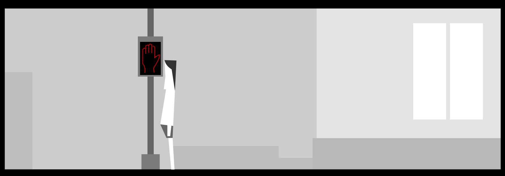
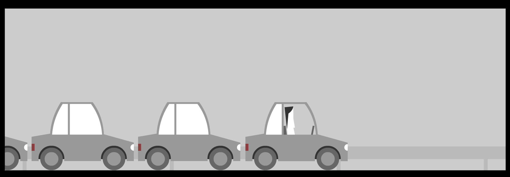
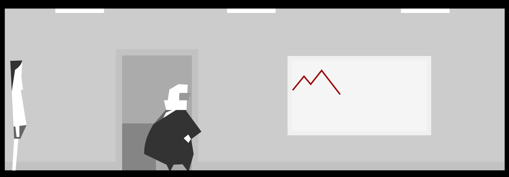
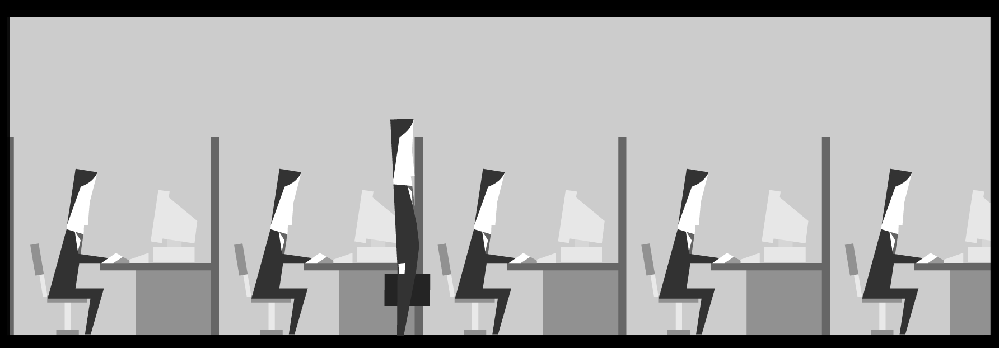
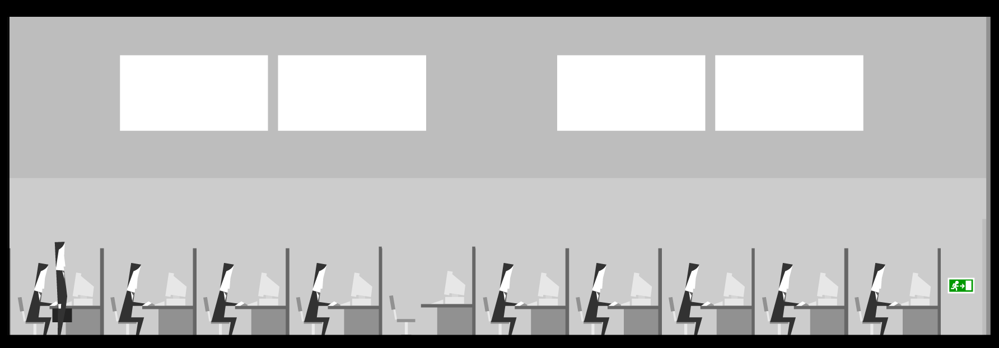
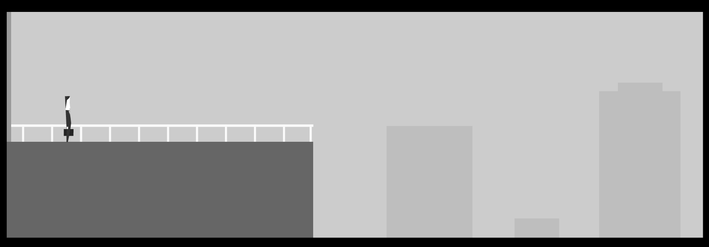
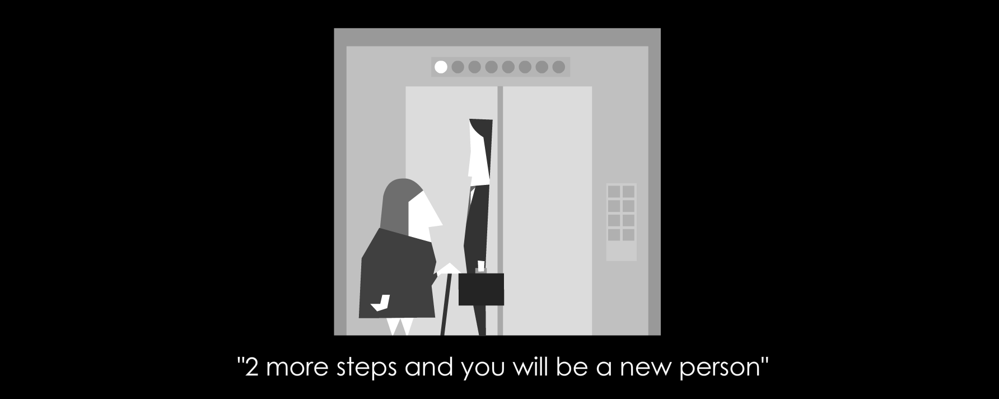
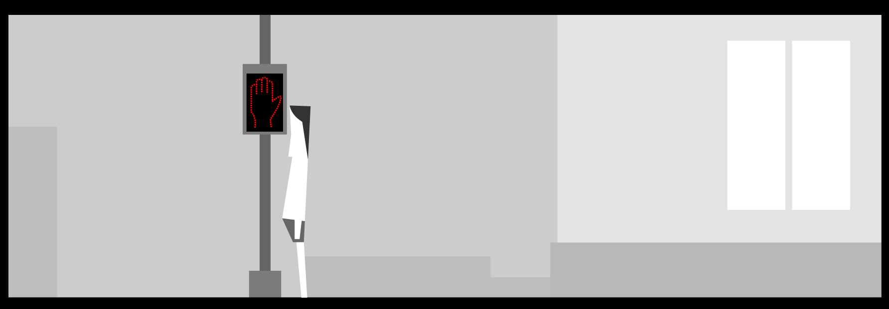
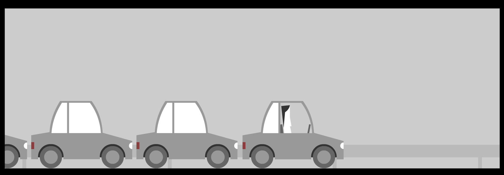
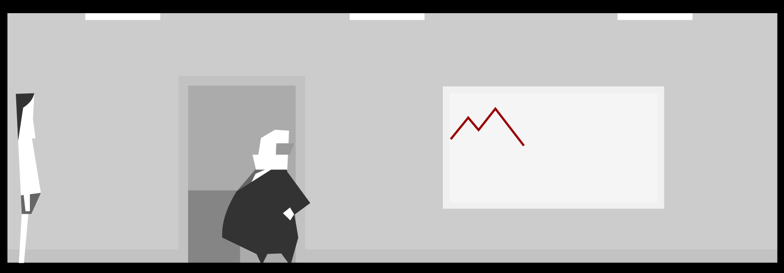
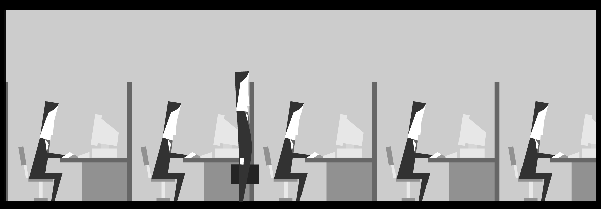
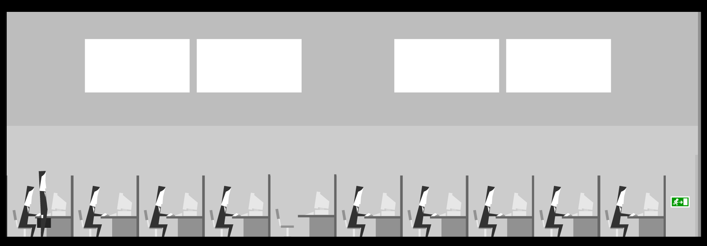
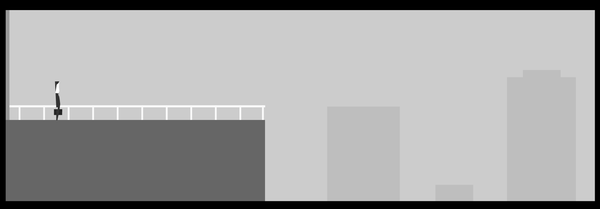
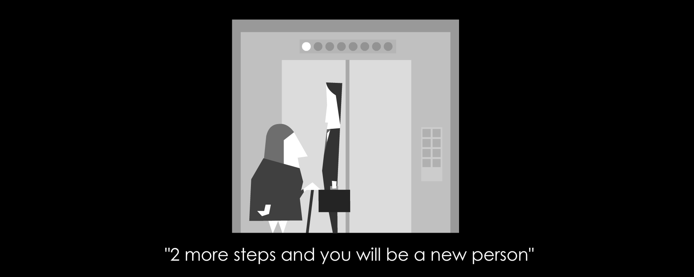
Some game play:
The game start out simple, I woke up. And as I would do in real life, I turn the alarm off.
Decided to avoid putting clothes to see what you happen
My wife wasn't very impress with me.
Continue down the road, and got in the elevator
One out! Took a left turn
Waited until the light would become red ... but turns out I won't change, and I can't cross. Thus turn around and walked back...
..some how I ended up driving!! So I continue until the end
My boss was angry I wasn't wearing clothing... and he fire me....
Next time, I dress and went straight to work!.. This time I didn't get fire.. and continue to my work
The cubicle never end.. until I reach .. the end and I jumped
On the next life! I notice the woman Keep saying in so many steps I will be a new man... decided to live more times until that number was zero.
... I keep dying and dying and the woman in the elevator did not reduce the number...
I got bored after 15 mins of playing, and decided to quit the game.